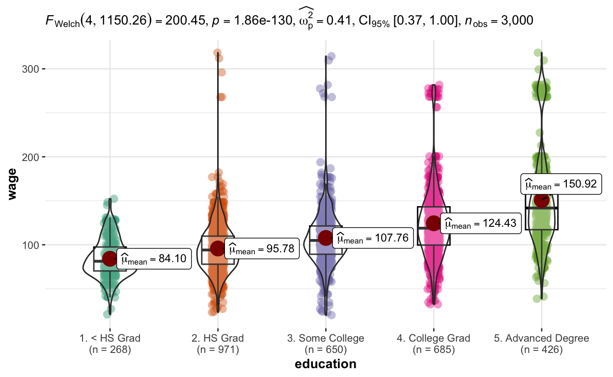
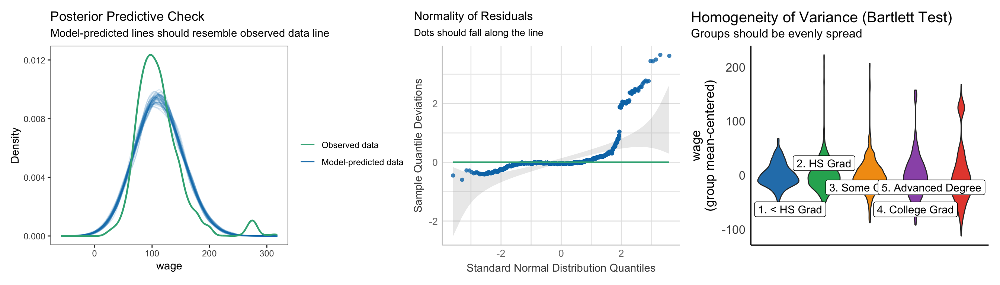
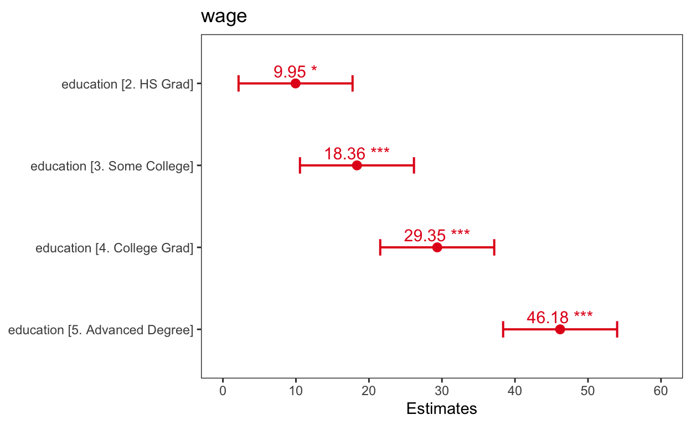

This post as ca. … minutes video
Clean the data, otherwise: shit in shit out!

First of all, it’s crucial to visualize the data before modeling, because the real-world data often contains contaminations 💩. For instance, in Wage dataset from the ISLR package, I would remove the high-income individuals earning over 250K per year, because they are outliers, and totally not because I am jealous! 😉. The data-cleaning step is vital and often overlooked. Remember the phrase: ‘Garbage in, garbage out’? If we skip data cleaning, our model’s performance could be seriously compromised, and we’ll see it in a moment. For now let’s take 100 random people form the industry and build our linear model around them.
Build linear equation
To build our linear model, we’ll use the intuitive ‘lm’ (show pack of cigarettes ; с рекламой импотенции :) function. Within ‘lm’, we only need two arguments: the formula and the data. Here’s how it breaks down:
On the left side of the formula, we’ll place the variable we’re interested in predicting. Unfortunately, this variable goes by several names: response variable, outcome, dependent variable, target, and more. It can get confusing!
On the right side, we’ll place the predictor variable. Predictors also have various synonyms: independent variable, explanatory variable, regressor or covariate (in linear regression), feature (in Machine Learning), and even risk factor (in epidemiology).
Ugh, so many names for the same thing! Drives me nuts. Makes stats seem way harder than it actually is.
# build the model
m <- lm(formula = wage ~ education, data = d)Check all model assumptions visually
After building the model, we need to make sure the assumptions are satisfied. Otherwise, we couldn’t trust our model! The {performance} package offers intuitive and powerful functions to do that, for instance
- “check_posterior_predictions()” model fits the data well
- “check_normality()” looks whether the residuals are normally distributed and
- “check_homogeneity()” compares variances between groups.
# check model assumptions visually
library(performance) # extra video on my channel
a <- check_posterior_predictions(m) %>% plot()
b <- check_normality(m) %>% plot()
c <- check_homogeneity(m) %>% plot()
library(patchwork) # extra video on my channel
a + b + c
Looking at the assumptions, I could say that the model fits the data pretty well! The residuals are normally distributed since they are inside the confidence intervals, which means our data is normally distributed. And finally, the variance is relatively similar.
By the way: with categorical predictor we don’t need to check the linearity and outliers assumptions, and we can relax the independence of observations assumptions, since we don’t have repeated measures.
Now, when we model uncleaned data, the model fit would be far from reality, because those rich folks I am totally not jealous about ;) would
- compromised the model fit
- skew the normality of residuals and
- add huge heterogenety between groups, in other words would make the groups variance differ,
… so that I would stop trusting my model. Therefore, it’s really important to clean the data before modeling.
m2 <- lm(formula = wage ~ education, data = Wage)
a <- check_posterior_predictions(m2) %>% plot()
b <- check_normality(m2) %>% plot()
c <- check_homogeneity(m2) %>% plot()
a + b + c
Oh, and by the way, if you have a lot of data, it’s important to check assumptions visually, like we just did, instead of conducting statistical tests. Because, the tests would often show significant results, meaning that assumptions seemingly would not be satisfied, while they are actually satisfied. Here is an example of the Shapiro-Wilk normality test, which magically finds non-normally distributed residuals, even though they are totally fine!
# don't trust statistical tests to much
check_normality(m)Warning: Non-normality of residuals detected (p = 0.041).Now, since the assumptions of our model are satisfied, we can visualize model results, and by results, I mean visualize model predictions.
Visualize predictions
For that, we’ll use another very intuitive function called “plot_model()” from the {sjPlot} package and provide three arguments:
- the model name,
- the type of predictions — we’ll use “effect” to get an effect plot, and
- the name of a predictor we want to visualize.
# visualize predictions
library(sjPlot) # extra video on my channel
plot_model(m, type = "eff", terms = "education") # show.data = T
And voilà, our plot shows that salaries increase with increasing levels of education. Nice right? But this plot misses two important details: it doesn’t display the differences in salaries between groups, and it doesn’t demonstrate whether these differences are significant.
Visualize estimates
But we can quickly solve both problems, when we use
- “show.values = TRUE” instead of “type =”eff” in the “plot_model()” function and
- width argument instead of predictor name.
# visualize estimates
plot_model(m, show.values = TRUE, width = 0.2)
Namely, it tells us that we have a 1080$ increase in salary per year, and this increase is highly significant because the estimate doesn’t cross zero. And while the significance stars are often enough, sometimes we need an exact p-value. To obtain this, we’ll use the “tab_model()” function from the same {sjPlot} package. This function produces a nice, publication-ready table that not only provides exact p-values but also reveals the equation of our linear model:
Summary function
summary(m)
Call:
lm(formula = wage ~ education, data = d)
Residuals:
Min 1Q Median 3Q Max
-84.46 -16.56 -2.13 16.04 95.09
Coefficients:
Estimate Std. Error t value Pr(>|t|)
(Intercept) 86.186 2.810 30.674 < 2e-16 ***
education2. HS Grad 9.949 3.974 2.504 0.0126 *
education3. Some College 18.359 3.974 4.620 4.89e-06 ***
education4. College Grad 29.353 3.974 7.387 6.43e-13 ***
education5. Advanced Degree 46.185 3.974 11.623 < 2e-16 ***
---
Signif. codes: 0 '***' 0.001 '**' 0.01 '*' 0.05 '.' 0.1 ' ' 1
Residual standard error: 28.1 on 495 degrees of freedom
Multiple R-squared: 0.2458, Adjusted R-squared: 0.2397
F-statistic: 40.34 on 4 and 495 DF, p-value: < 2.2e-16We could use a well known summary table for that, but the output, although useful, is not really pleasing to the human eye and is not suitable for publication.
There are tons of videos about summary function out there. So, I don’t explain this in detail here. And I honestly don’t know why it is soo famous and soo many videos are made about it. And here is what summary function misses to deliver:
Have you ever wondered, why a “summary” function compares all categories of a categorical predictor to only the reference category, without comparing categories to each other?
And what about those mysterious slopes with standard errors we get as model coefficients instead of the averages per category with 95% CIs that we actually want?
Moreover, “summary” function doesn’t adjust p-values for multiple comparisons, which increases the probability of discovering nonsense by making too many type-I errors.
Summary function doesn’t plot the results of a model and
makes it almost impossible to interpret interactions!
So, if you’ve ever been frustrated due to similar issues, you’re definitely not alone! The “summary” function doesn’t actually provide a very useful summary, and that’s why we need {emmeans} package, which solves all those problems.
Post-Hoc tests.
A much better choice is the “emmeans” function from the very powerful {emmeans} package. It not only provides predictions for any education you desire, but also reports 95% confidence intervals and offers a wide range of additional capabilities.
library(emmeans) # extra 2 videos on my channel ;)
results <- emmeans(m, pairwise ~ education, infer = T)
results$emmeans
education emmean SE df lower.CL upper.CL t.ratio p.value
1. < HS Grad 86.2 2.81 495 80.7 91.7 30.674 <.0001
2. HS Grad 96.1 2.81 495 90.6 101.7 34.215 <.0001
3. Some College 104.5 2.81 495 99.0 110.1 37.208 <.0001
4. College Grad 115.5 2.81 495 110.0 121.1 41.121 <.0001
5. Advanced Degree 132.4 2.81 495 126.9 137.9 47.112 <.0001
Confidence level used: 0.95
$contrasts
contrast estimate SE df lower.CL
1. < HS Grad - 2. HS Grad -9.95 3.97 495 -20.8
1. < HS Grad - 3. Some College -18.36 3.97 495 -29.2
1. < HS Grad - 4. College Grad -29.35 3.97 495 -40.2
1. < HS Grad - 5. Advanced Degree -46.18 3.97 495 -57.1
2. HS Grad - 3. Some College -8.41 3.97 495 -19.3
2. HS Grad - 4. College Grad -19.40 3.97 495 -30.3
2. HS Grad - 5. Advanced Degree -36.24 3.97 495 -47.1
3. Some College - 4. College Grad -10.99 3.97 495 -21.9
3. Some College - 5. Advanced Degree -27.83 3.97 495 -38.7
4. College Grad - 5. Advanced Degree -16.83 3.97 495 -27.7
upper.CL t.ratio p.value
0.930 -2.504 0.0914
-7.480 -4.620 <.0001
-18.474 -7.387 <.0001
-35.306 -11.623 <.0001
2.469 -2.117 0.2146
-8.525 -4.883 <.0001
-25.357 -9.119 <.0001
-0.114 -2.767 0.0462
-16.947 -7.003 <.0001
-5.953 -4.236 0.0003
Confidence level used: 0.95
Conf-level adjustment: tukey method for comparing a family of 5 estimates
P value adjustment: tukey method for comparing a family of 5 estimates We could even quickly plot contrasts in order to see where the difference is the biggest. For instance, naturally the biggest difference is between two lowest categories, HS Grad and below, vs. the highest categorie, Advanced Degree.

But as much as I love {emmeans} package, it is also not perfect. While it can produce a publication ready with some coding effort, it’s not as easy and quick, as with two other options we’ll learn next.
Get publication ready table
The first one is “tab_model” function from {sjPlot} package. It takes only three intuitive arguments to produce a basic table, where all categories are compared to the reference levels.
tab_model(m,
show.reflvl = T,
show.intercept = F,
p.style = "numeric_stars")| wage | |||
|---|---|---|---|
| Predictors | Estimates | CI | p |
|
Reference | ||
|
9.95 * | 2.14 – 17.76 | 0.013 |
|
18.36 *** | 10.55 – 26.17 | <0.001 |
|
29.35 *** | 21.55 – 37.16 | <0.001 |
|
46.18 *** | 38.38 – 53.99 | <0.001 |
| Observations | 500 | ||
| R2 / R2 adjusted | 0.246 / 0.240 | ||
|
|||
But I never understood, why people avoid more inference by limiting themselfes to only one reference category, while this inference was already calculated by the model. What if we want to compare all categories to each other pairwisely? So, that the second option is to produce a table with contrasts using the “tbl_regression” function from {gtsummary} package, which also take only few intuitive arguments. Where Beta is the difference in thousands of dollars.
library(gtsummary)
fancy_table <- tbl_regression(m, add_pairwise_contrasts = T) %>%
add_significance_stars(hide_p = F, hide_se = T, hide_ci = F)
fancy_table| Characteristic | Beta1 | 95% CI2 | p-value |
|---|---|---|---|
| education | |||
| 2. HS Grad - 1. < HS Grad | 10 | -0.93, 21 | 0.091 |
| 3. Some College - 1. < HS Grad | 18*** | 7.5, 29 | <0.001 |
| 3. Some College - 2. HS Grad | 8.4 | -2.5, 19 | 0.2 |
| 4. College Grad - 1. < HS Grad | 29*** | 18, 40 | <0.001 |
| 4. College Grad - 2. HS Grad | 19*** | 8.5, 30 | <0.001 |
| 4. College Grad - 3. Some College | 11* | 0.11, 22 | 0.046 |
| 5. Advanced Degree - 1. < HS Grad | 46*** | 35, 57 | <0.001 |
| 5. Advanced Degree - 2. HS Grad | 36*** | 25, 47 | <0.001 |
| 5. Advanced Degree - 3. Some College | 28*** | 17, 39 | <0.001 |
| 5. Advanced Degree - 4. College Grad | 17*** | 6.0, 28 | <0.001 |
| 1 *p<0.05; **p<0.01; ***p<0.001 | |||
| 2 CI = Confidence Interval | |||
library(flextable)
fancy_table %>%
as_flex_table() %>%
save_as_docx(path = "fancy_table.docx") When you need to publish the equation of the model, you could “extract_eq” it from the model via “extract_eq” function from {equatiomatic} package.
\[ \operatorname{wage} = \alpha + \beta_{1}(\operatorname{education}_{\operatorname{2.\ HS\ Grad}}) + \beta_{2}(\operatorname{education}_{\operatorname{3.\ Some\ College}}) + \beta_{3}(\operatorname{education}_{\operatorname{4.\ College\ Grad}}) + \beta_{4}(\operatorname{education}_{\operatorname{5.\ Advanced\ Degree}}) + \epsilon \]
This equation describes the straight-line relationship between the x-axis and the y-axis:
\[ y = α + βx \] Or, in our case, between “education” and “salary”:
\[ wage = Estimate_{(Intercept)} + Estimate_{education} * education \]
… and it helps us to interpret our model. Specifically, an increase in education of one year results in an average salary increase of 1080$. It’s important to note that this increase can vary — sometimes it’s as low as 540$, and other times as high as 1620$, depending on people’s job roles. The model indicates that there is a 95% chance that the salary increase falls within this interval. That’s why it’s called - the 95% Confidence Interval.
If this average annual increase of 1080$ occurs consistently, we obtain the slope of the line, represented by the beta (β) coefficient in the model formula. Put simply, the slope indicates the average change in “y” for every one-unit increase in “x”. As with any slope, it needs a starting point. And the best start of any slope is usually zero. When our line crosses the y-axis (zero on the x-axis), we find the intercept (α) in the model output. In our case, this implies an unrealistic scenario where our salary would be 57,500$ at birth, which doesn’t make any sense, and that’s why the intercept of a model is often not interpreted.
The true value of the formula lies in its ability to predict future salaries. By plugging any “education” value (x) into the model equation, we can estimate the corresponding “salary” value (y). This means we can ask the model to tell us how much we’ll earn when we’re 40 or 50.
Get effect sizes
Now, that we understand how to interpret our model, the next crucial question we need to address is - how good our model is. Your clients or scientific reviewers will definetely ask this question. What they typically want to know is - how well our model fits the data, which is summarized by the coefficient of determination, denoted as \(R^2\).
\(R^2\) quantifies how much variance in the data our model explains. It ranges from 0 to 1, with a simple rule: the higher the value, the better the fit. However, interpreting \(R^2\) is context-dependent. For instance:
- in physics, a model with \(R^2\) near 1 is usually desirable, while
- in biology, even an \(R^2\) of 0.2 might indicate a good model fit.
Despite this context sensitivity, some guidelines proposed by smart individuals (such as Cohen) exist. And we can ask the {effectsize} package to interpret any value of \(R^2\) for us.
# get effect sizes
library(effectsize)
?interpret_r2
interpret_r2(0.246, rules = "cohen1988") [1] "moderate"
(Rules: cohen1988)# rules = "cohen1988" is a defaultIn our case, the \(R^2\) value of 0.139 indicates a moderate relationship between education and salary. But why moderate and not strong? Well, that could be because education is most likely not the most crucial predictor for salary 😉. I mean, when I sit on the sofa, do nothing, and just get older, my salary won’t grow! So, what is an important predictor? Education is!
ggplot(Wage, aes(x = education, y = wage, color = jobclass))+
geom_boxplot()
Specifically, folks without a High School diploma start at 70,000$ as early as 18 years old, while those with an “Advanced Degree” begin with a salary of approximately 140,000$ at the education of 25, after completing their studies. However, I’ll cover it in a separate video in this series, where I demonstrate how to interpret a model with a categorical predictor. Until then if you’re enjoying the video so far, please, consider hitting the like button!
Report model results
Finally, the last thing I found difficult was accurately describing the model with sufficient detail for others to understand and reproduce my results. If you have similar problem, the {report} package solves it — even if you only use one function to literally “report” your model.
Namely, the “report” function:
- identifies the type of model you used,
- shows how well the model fits the data (\(R^2\)),
- interprets effect sizes,
- describes whether predictors are significant and which direction the slopes go and
- even reports how 95% confidence intervals (CIs) and p-values were calculated.
I personally found it very useful, but I’d love to know what you think? So, feel free to share your thoughts in the comments section below.
We fitted a linear model (estimated using OLS) to predict wage with
education (formula: wage ~ education). The model explains a
statistically significant and moderate proportion of variance (R2 =
0.25, F(4, 495) = 40.34, p < .001, adj. R2 = 0.24). The model's
intercept, corresponding to education = 1. < HS Grad, is at 86.19
(95% CI [80.67, 91.71], t(495) = 30.67, p < .001). Within this model:
- The effect of education [2. HS Grad] is statistically significant
and positive (beta = 9.95, 95% CI [2.14, 17.76], t(495) = 2.50, p =
0.013; Std. beta = 0.31, 95% CI [0.07, 0.55])
- The effect of education [3. Some College] is statistically
significant and positive (beta = 18.36, 95% CI [10.55, 26.17], t(495)
= 4.62, p < .001; Std. beta = 0.57, 95% CI [0.33, 0.81])
- The effect of education [4. College Grad] is statistically
significant and positive (beta = 29.35, 95% CI [21.55, 37.16], t(495)
= 7.39, p < .001; Std. beta = 0.91, 95% CI [0.67, 1.15])
- The effect of education [5. Advanced Degree] is statistically
significant and positive (beta = 46.18, 95% CI [38.38, 53.99], t(495)
= 11.62, p < .001; Std. beta = 1.43, 95% CI [1.19, 1.68])
Standardized parameters were obtained by fitting the model on a
standardized version of the dataset. 95% Confidence Intervals (CIs)
and p-values were computed using a Wald t-distribution approximation.# Indices of model performance
AIC | AICc | BIC | R2 | R2 (adj.) | RMSE | Sigma
--------------------------------------------------------------------
4761.586 | 4761.756 | 4786.874 | 0.246 | 0.240 | 27.956 | 28.097What’s next?
What do we do, when assumptions are not satisfied? Well, while there are several options, like robust or bootstrapping regression, I personally enjoy the quantile regression a lot. So, if you wanna be equepped for more situations and be statistically robust, make sure to check out this video on quantile regression:
report(d)The data contains 500 observations, grouped by education, of the
following 11 variables:
- 1. < HS Grad (n = 100):
- year: n = 100, Mean = 2006.01, SD = 1.98, Median = 2006.00, MAD =
2.97, range: [2003, 2009], Skewness = 0.02, Kurtosis = -1.32, 0%
missing
- age: n = 100, Mean = 41.27, SD = 11.56, Median = 41.00, MAD =
10.38, range: [18, 73], Skewness = 0.38, Kurtosis = -7.93e-03, 0%
missing
- maritl: 5 levels, namely 1. Never Married (n = 21, 21.00%), 2.
Married (n = 64, 64.00%), 3. Widowed (n = 0, 0.00%), 4. Divorced (n =
7, 7.00%) and 5. Separated (n = 8, 8.00%)
- race: 4 levels, namely 1. White (n = 82, 82.00%), 2. Black (n = 10,
10.00%), 3. Asian (n = 6, 6.00%) and 4. Other (n = 2, 2.00%)
- region: 9 levels, namely 1. New England (n = 0, 0.00%), 2. Middle
Atlantic (n = 100, 100.00%), 3. East North Central (n = 0, 0.00%), 4.
West North Central (n = 0, 0.00%), 5. South Atlantic (n = 0, 0.00%),
6. East South Central (n = 0, 0.00%), 7. West South Central (n = 0,
0.00%), 8. Mountain (n = 0, 0.00%) and 9. Pacific (n = 0, 0.00%)
- jobclass: 2 levels, namely 1. Industrial (n = 68, 68.00%) and 2.
Information (n = 32, 32.00%)
- health: 2 levels, namely 1. <=Good (n = 41, 41.00%) and 2. >=Very
Good (n = 59, 59.00%)
- health_ins: 2 levels, namely 1. Yes (n = 49, 49.00%) and 2. No (n =
51, 51.00%)
- logwage: n = 100, Mean = 4.42, SD = 0.30, Median = 4.40, MAD =
0.24, range: [3.04, 5.03], Skewness = -1.41, Kurtosis = 5.43, 0%
missing
- wage: n = 100, Mean = 86.19, SD = 22.70, Median = 81.28, MAD =
18.77, range: [20.93, 152.22], Skewness = 0.25, Kurtosis = 0.70, 0%
missing
- 2. HS Grad (n = 100):
- year: n = 100, Mean = 2006.00, SD = 2.02, Median = 2006.00, MAD =
2.97, range: [2003, 2009], Skewness = -0.02, Kurtosis = -1.29, 0%
missing
- age: n = 100, Mean = 42.85, SD = 11.76, Median = 43.00, MAD =
11.86, range: [19, 66], Skewness = -0.05, Kurtosis = -0.85, 0%
missing
- maritl: 5 levels, namely 1. Never Married (n = 19, 19.00%), 2.
Married (n = 70, 70.00%), 3. Widowed (n = 2, 2.00%), 4. Divorced (n =
8, 8.00%) and 5. Separated (n = 1, 1.00%)
- race: 4 levels, namely 1. White (n = 88, 88.00%), 2. Black (n = 8,
8.00%), 3. Asian (n = 3, 3.00%) and 4. Other (n = 1, 1.00%)
- region: 9 levels, namely 1. New England (n = 0, 0.00%), 2. Middle
Atlantic (n = 100, 100.00%), 3. East North Central (n = 0, 0.00%), 4.
West North Central (n = 0, 0.00%), 5. South Atlantic (n = 0, 0.00%),
6. East South Central (n = 0, 0.00%), 7. West South Central (n = 0,
0.00%), 8. Mountain (n = 0, 0.00%) and 9. Pacific (n = 0, 0.00%)
- jobclass: 2 levels, namely 1. Industrial (n = 62, 62.00%) and 2.
Information (n = 38, 38.00%)
- health: 2 levels, namely 1. <=Good (n = 38, 38.00%) and 2. >=Very
Good (n = 62, 62.00%)
- health_ins: 2 levels, namely 1. Yes (n = 70, 70.00%) and 2. No (n =
30, 30.00%)
- logwage: n = 100, Mean = 4.53, SD = 0.26, Median = 4.54, MAD =
0.24, range: [3.90, 5.08], Skewness = -0.15, Kurtosis = -0.44, 0%
missing
- wage: n = 100, Mean = 96.13, SD = 24.91, Median = 94.00, MAD =
23.72, range: [49.56, 160.64], Skewness = 0.44, Kurtosis = -0.22, 0%
missing
- 3. Some College (n = 100):
- year: n = 100, Mean = 2005.77, SD = 1.94, Median = 2006.00, MAD =
2.22, range: [2003, 2009], Skewness = 0.09, Kurtosis = -1.09, 0%
missing
- age: n = 100, Mean = 39.42, SD = 11.40, Median = 39.00, MAD =
13.34, range: [18, 64], Skewness = 0.29, Kurtosis = -0.76, 0% missing
- maritl: 5 levels, namely 1. Never Married (n = 29, 29.00%), 2.
Married (n = 59, 59.00%), 3. Widowed (n = 0, 0.00%), 4. Divorced (n =
10, 10.00%) and 5. Separated (n = 2, 2.00%)
- race: 4 levels, namely 1. White (n = 87, 87.00%), 2. Black (n = 11,
11.00%), 3. Asian (n = 1, 1.00%) and 4. Other (n = 1, 1.00%)
- region: 9 levels, namely 1. New England (n = 0, 0.00%), 2. Middle
Atlantic (n = 100, 100.00%), 3. East North Central (n = 0, 0.00%), 4.
West North Central (n = 0, 0.00%), 5. South Atlantic (n = 0, 0.00%),
6. East South Central (n = 0, 0.00%), 7. West South Central (n = 0,
0.00%), 8. Mountain (n = 0, 0.00%) and 9. Pacific (n = 0, 0.00%)
- jobclass: 2 levels, namely 1. Industrial (n = 55, 55.00%) and 2.
Information (n = 45, 45.00%)
- health: 2 levels, namely 1. <=Good (n = 22, 22.00%) and 2. >=Very
Good (n = 78, 78.00%)
- health_ins: 2 levels, namely 1. Yes (n = 67, 67.00%) and 2. No (n =
33, 33.00%)
- logwage: n = 100, Mean = 4.60, SD = 0.35, Median = 4.62, MAD =
0.23, range: [3, 5.18], Skewness = -2.01, Kurtosis = 6.96, 0% missing
- wage: n = 100, Mean = 104.55, SD = 29.35, Median = 101.82, MAD =
24.83, range: [20.09, 176.99], Skewness = -0.08, Kurtosis = 0.84, 0%
missing
- 4. College Grad (n = 100):
- year: n = 100, Mean = 2005.69, SD = 1.99, Median = 2005.50, MAD =
2.22, range: [2003, 2009], Skewness = 0.14, Kurtosis = -1.25, 0%
missing
- age: n = 100, Mean = 41.88, SD = 10.68, Median = 43.00, MAD =
11.86, range: [22, 64], Skewness = 0.03, Kurtosis = -0.86, 0% missing
- maritl: 5 levels, namely 1. Never Married (n = 26, 26.00%), 2.
Married (n = 64, 64.00%), 3. Widowed (n = 1, 1.00%), 4. Divorced (n =
9, 9.00%) and 5. Separated (n = 0, 0.00%)
- race: 4 levels, namely 1. White (n = 84, 84.00%), 2. Black (n = 6,
6.00%), 3. Asian (n = 8, 8.00%) and 4. Other (n = 2, 2.00%)
- region: 9 levels, namely 1. New England (n = 0, 0.00%), 2. Middle
Atlantic (n = 100, 100.00%), 3. East North Central (n = 0, 0.00%), 4.
West North Central (n = 0, 0.00%), 5. South Atlantic (n = 0, 0.00%),
6. East South Central (n = 0, 0.00%), 7. West South Central (n = 0,
0.00%), 8. Mountain (n = 0, 0.00%) and 9. Pacific (n = 0, 0.00%)
- jobclass: 2 levels, namely 1. Industrial (n = 34, 34.00%) and 2.
Information (n = 66, 66.00%)
- health: 2 levels, namely 1. <=Good (n = 23, 23.00%) and 2. >=Very
Good (n = 77, 77.00%)
- health_ins: 2 levels, namely 1. Yes (n = 77, 77.00%) and 2. No (n =
23, 23.00%)
- logwage: n = 100, Mean = 4.71, SD = 0.29, Median = 4.74, MAD =
0.27, range: [3.90, 5.30], Skewness = -0.70, Kurtosis = 0.33, 0%
missing
- wage: n = 100, Mean = 115.54, SD = 30.77, Median = 114.48, MAD =
30.12, range: [49.56, 200.54], Skewness = 0.06, Kurtosis = -0.15, 0%
missing
- 5. Advanced Degree (n = 100):
- year: n = 100, Mean = 2006.02, SD = 2.08, Median = 2006.00, MAD =
2.97, range: [2003, 2009], Skewness = 0.01, Kurtosis = -1.32, 0%
missing
- age: n = 100, Mean = 43.73, SD = 10.29, Median = 42.50, MAD =
12.60, range: [27, 72], Skewness = 0.27, Kurtosis = -0.74, 0% missing
- maritl: 5 levels, namely 1. Never Married (n = 21, 21.00%), 2.
Married (n = 72, 72.00%), 3. Widowed (n = 0, 0.00%), 4. Divorced (n =
7, 7.00%) and 5. Separated (n = 0, 0.00%)
- race: 4 levels, namely 1. White (n = 76, 76.00%), 2. Black (n = 9,
9.00%), 3. Asian (n = 15, 15.00%) and 4. Other (n = 0, 0.00%)
- region: 9 levels, namely 1. New England (n = 0, 0.00%), 2. Middle
Atlantic (n = 100, 100.00%), 3. East North Central (n = 0, 0.00%), 4.
West North Central (n = 0, 0.00%), 5. South Atlantic (n = 0, 0.00%),
6. East South Central (n = 0, 0.00%), 7. West South Central (n = 0,
0.00%), 8. Mountain (n = 0, 0.00%) and 9. Pacific (n = 0, 0.00%)
- jobclass: 2 levels, namely 1. Industrial (n = 31, 31.00%) and 2.
Information (n = 69, 69.00%)
- health: 2 levels, namely 1. <=Good (n = 13, 13.00%) and 2. >=Very
Good (n = 87, 87.00%)
- health_ins: 2 levels, namely 1. Yes (n = 75, 75.00%) and 2. No (n =
25, 25.00%)
- logwage: n = 100, Mean = 4.86, SD = 0.25, Median = 4.90, MAD =
0.20, range: [4.03, 5.43], Skewness = -0.64, Kurtosis = 0.86, 0%
missing
- wage: n = 100, Mean = 132.37, SD = 31.67, Median = 133.97, MAD =
24.62, range: [56.45, 227.46], Skewness = 0.21, Kurtosis = 0.32, 0%
missingShould we categorize numerical predictors?
Advantages
Increases interpretability: Sometimes it’s easier to understand the impact of different predictor levels on the outcome. For instance, instead of saying “for every 1-unit increase in blood pressure,” we can say “for patients with high blood pressure.”
Handles nonlinearity: Categorization captures nonlinear relationships between predictors and outcomes if one exists. By categorizing based on these smooth functions, we can identify risk categories (e.g., low, average, high) more effectively. Segmenting the data into groups can potentially improve model fit and predictive power.
Decision Support: Categorization simplifies decision-making. For example, a physician might categorize a patient’s cholesterol level as “normal,” “borderline,” or “high.”
Model Stability: Categorization can stabilize model estimates. Continuous predictors may introduce noise due to small fluctuations. By grouping similar values together, we reduce the impact of minor variations and enhance model stability.
Outlier Control: Similar to decision trees, categorization can reduce the impact of outliers in the data. By grouping outliers with other data points, their influence on the model can be mitigated.
Relaxes Linearity Assumption
Handling Missing Values: Categorization allows handling missing data by creating a separate category.
Disadvantages
Information Loss: The original numeric relationship is replaced by discrete categories, which may not fully capture the underlying variability.
Subjective Boundaries (Category Choice): Choosing category boundaries is subjective and can impact model results. Techniques like quantile-based methods, k-means clustering, or domain knowledge-based approaches can be used to create informative categories. However, choosing different binning schemes can lead to varying results.
Inefficient Use of Data: Binning reduces the effective sample size within each category. Smaller sample sizes can lead to less precise estimates.
Increased Model Complexity: Categorization introduces additional parameters (dummy variables) into the model. More parameters can lead to overfitting, especially with limited data.
In summary, while categorization can simplify modeling, it comes with trade-offs. Consider the context, research question, and data characteristics before deciding whether to categorize numeric predictors in your statistical models.
If you think, I missed something, please comment on it, and I’ll improve this tutorial.
Thank you for learning!